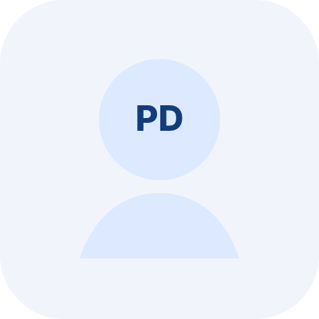

Márcio Basgalupp
Associate Professor — UNIFESP
Research interests include Machine Learning, Automated Machine Learning, Evolutionary Computation, Data Science, graph-based learning, and adaptive intelligent systems.
This page is organized to present faculty, postdoctoral researchers, doctoral students, and master’s students in a clean academic format. Replace placeholders with official member data as needed.
Add one card per faculty member. The first example is already formatted and can be expanded with official links.
Research interests include Machine Learning, Automated Machine Learning, Evolutionary Computation, Data Science, graph-based learning, and adaptive intelligent systems.

Insert a concise description of research interests, academic role, and main topics of work.
Add current doctoral students here. A good format is: name, program, research topic, and link to profile or curriculum.
Add current master’s students here. This section can also include undergraduate researchers if desired.